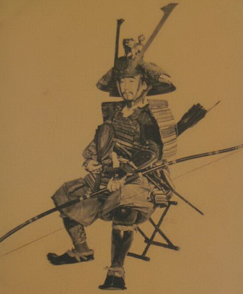
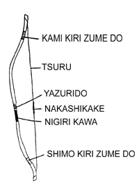
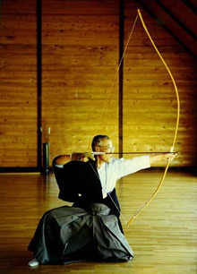
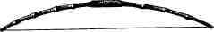

Юми - японский лук

Японский лук (юми) имеет длину от 180 до 250 см. Один из луков, принадлежащих легендарному стрелку Минамото Тамэтомо, вообще имел высоту 280 см. При этом надо учитывать, что в отличие от английского или монгольского японский лук ассиметричный, и его нижний конец в два раза короче верхнего. Подобный тип лука встречается также у эвенков. Тетива его натягивается не до уха, как в английском луке, а за ухо назад, а длина стрелы может составлять от 11 до 15 ладоней. Стрельба из него велась как из положения стоя, так и с колена или на скаку.
Для самурая умение владеть луком было столь же важно, как и умение владеть мечом, и существовала целая серия разнообразных вариантов состязаний по стрельбе. В "ябусамэ" воин должен был на полном скаку поразить серию неподвижных мишеней, выпустив по три стрелы с интервалом в 10 секунд. "Инагаси" напоминало стендовую стрельбу по летящим целям. "Энтэки" тренировало способность выпускать стрелу на дальние дистанции, и согласно легендам, выдающиеся стрелки выпускали стрелы, летящие на расстояние до километра. Во всяком случае, сражение очень часто начиналось с обмена "дальними стрелами", превращавшимися в подобие соревнования снайперов, перешибавших основание веера или перерезавших тетиву лука противника стрелой с раздвоенным наконечником с расстояния в несколько сот метров. В "инуэмоно" группа всадников обстреливала тупыми стрелами убегавшую от них собаку. Предание гласит, что однажды под столицей (Киото) завелась ужасающая девятихвостая лиса-оборотень. Лучшие лучники были посланы, чтобы ее истребить, но привыкшие к неподвижным или движущимся по заранее известной траектории мишеням лучники не смогли этого сделать. Тогда Есидзуми Миура, считающийся лучшим легендарным стрелком страны, изобрел этот метод тренировки, и натренировавшиеся на собаках стрелки без проблем поразили лису. Существовала и система стрельбы на время, когда в течение суток воин мог, не останавливаясь, выпустить несколько тысяч стрел. Рекорд XVII века - некий Вадза Датира выпустил за 24 часа 8133 стрелы, то есть грубо говоря, по 340 стрел в час. В минуту это получается всего 5-6 стрел, но ведь испытание длилось 1140 минут! А обычная боевая скорострельность японских лучников составляла 2-3 стрелы, как и английских.
Кроме большого лука, в Японии существовал и маленький, "половинный" (ханкю). Высокие дайме носили его, когда путешествовали куда-либо в паланкинах. В случае необходимости, такой лук можно было пускать в ход, не выходя из паланкина. Уважали ханкю и ниндзя, ведь его было гораздо проще спрятать, можно было носить при себе, а для того, чтобы "снять" часового или выстрелить в помещение через открытое окно, он был гораздо удобнее, хотя он не был дальнобойным. Обычно перед ниндзей не стояла задача пробить одной стрелой трех человек в доспехах, стоящих один за другим, как этом можно было сделать, стреляя из юми.
К.В.Асмолов. История холодного оружия: Восток и Запад (часть 2)
 Табиюми, холодное оружие, японский складной походный лук; состоит из двух бамбуковых половинок, скрепленных между собой металлическим шарниром с фиксатором. Стрелы для табиюми называются табийя, они часто прячутся в каркасе японской соломенной шляпы «каса» и снабжены отравленными наконечниками.